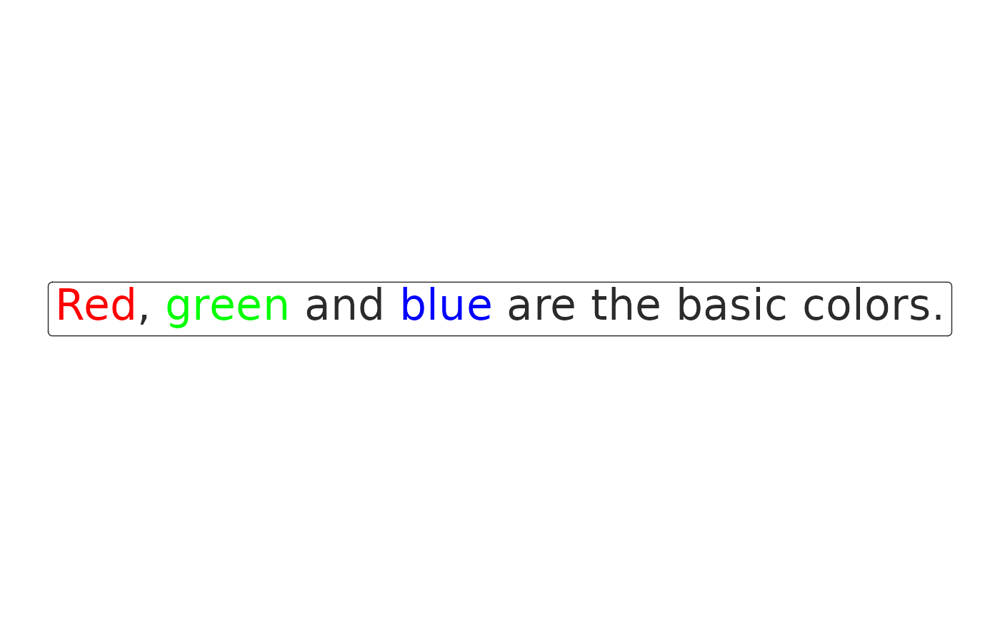

Create HTML span tag with text and color style
Arguments
- text
character, text that will be colored.
- color
character, color applied to the text, defaults to black.
- alpha
numeric, opacity in interval 0–1, where 1 is no transparency, i.e. full opacity
- ...
Arguments passed on to
htmltools::span.noWSCharacter vector used to omit some of the whitespace that would normally be written around this tag. Valid options include
before,after,outside,after-begin, andbefore-end. Any number of these options can be specified..renderHookA function (or list of functions) to call when the
tagis rendered. This function should have at least one argument (thetag) and return anything that can be converted into tags viaas.tags(). Additional hooks may also be added to a particulartagviatagAddRenderHook().
Examples
html <- paste0(
with_clr("Red", "red"), ", ",
with_clr("green", "green"),
" and ",
with_clr("blue", "blue"),
" are the basic colors."
)
library(ggplot2)
library(ggtext)
ggplot() +
geom_richtext(aes(x = 1, y = 1, label = html), size = 8) +
theme_void()
